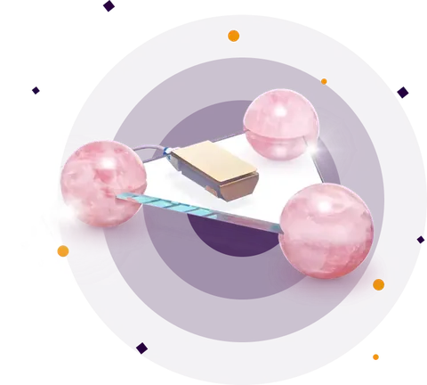

Quantec Pro biocomunicação instrumental
Aparelho desenvolvido na Alemanha que envia vibrações a distância para pessoas, animais, plantações, ambientes e empresas. Recebeu medalha de ouro num salão internacional de inovação.
- 1Sua fotoÉ por ela que o aparelho acessa sua informação original.
- 2A leituraComparação com um banco de mais de 110 mil frequências, para escolher as que você precisa.
- 3O envioAs frequências chegam a cada 3 horas, durante 3 meses, onde você estiver.
- 4A consultaOnline ou presencial, eu interpreto o relatório com você. Nos 3 meses dá para trabalhar vários temas.
